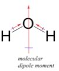
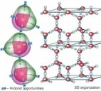
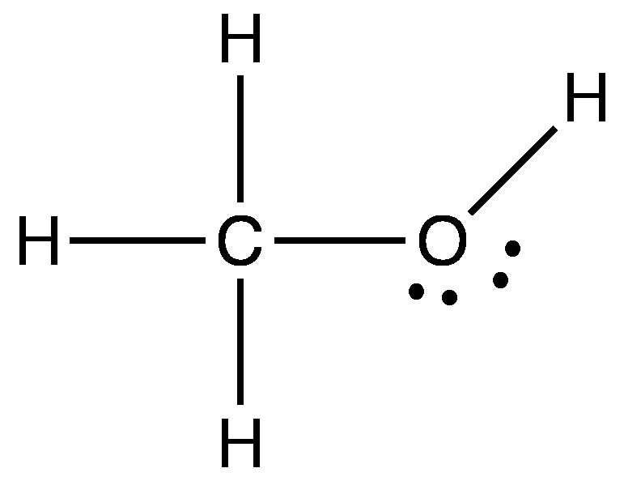
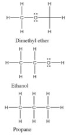
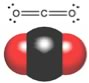

| Chapter 4.5: How
molecular shapes and polarity influence molecular interactions |
|
Now we really have to begin to use our 3D geometrical thinking and consider several additional factors: the shape of the molecules and how they interact – much of this thinking needs to be done “hands on”, but we will outline the logic involved here. The HF molecule has a simple shape - it is linear with (partially) positively and (partially) negatively charged ends. In contrast, the H2O molecule has a more complex shape - it has two polar O-H bonds. To understand how this affects the polarity of the molecule we have to take into account both the number of bonds and their polarization. Bond polarity is a vector quantity, that is it has both a magnitude and a direction. This is where an understanding of the 3D structure of the molecule becomes critical. Each O-H bond is polarized and the overall polarity of the molecule is determined by the vector sum of these bond polarities. |
4.1 Heterogeneous compounds |
While this may sound a bit complicated, in practice it is relatively easy to predict qualitatively what the overall polarity of the molecule is - as long as you keep in mind the 3D structure. In water the two OH bonds are at an angle of about 107° to each other - and if we add the bond dipole moments up you can see that the overall direction of the dipole for the molecule bisects that angle. Now you might think ?that this exercise is a bit of a waste of time - surely it would make sense that if a molecule has polar bonds, then the molecule itself should be polar. However, as we will see shortly this is not always the case. |
| If we apply a similar analysis to ammonia (NH3) we see that the N–H bond is polar with a δ+s on the Hs and a δ– on the N. Remembering that the actual shape of NH3 is a triangular based pyramid, with an H–N–H bond angle of ~105º, we can see that there is an overall dipole moment in ammonia - so ammonia is a polar molecule. |  |
If we contrast this with methane, however, we see two differences. The first is that carbon is not nearly as electronegative as N, O, or F, so the C-H bond is not as polar. That said, there is an electronegativity difference and so the electron density in the C-H bond is distorted towards the C (since it is a little more electronegative than the H). At the same time, however, CH4 is symmetrical (tetrahedral). If we add up all the bond dipoles, they cancel each other out, giving an molecular dipole moment of 0. Even if we were to replaced the hydrogens in methane with fluorines - to give CF4 (carbon tetrafluoride) - which has very polar bonds (the electronegativity difference between C and F is greater than that between H and O), the resulting molecule would still be non-polar! This is another example of something counterintuitive - something made up of polar parts that is not polar. The famous hydrogen bond Now that we have a better idea of how the shape and types
of bonds in a molecule can affect its polarity, let us look a little
more closely at how molecules interact with each other. The first thing
to note is that globally non-polar molecules interact solely via London
dispersion forces - just like atoms of Ne or He. The boiling point
of Ne is -246 °C, while the boiling point of CH4 is -161 °C.
This means that methane molecules are more strongly attracted to each
other than are Neon atoms. We can explain this based on the fact that
a methane molecule is larger than a Ne atom – the electrons in
methane molecules are dispersed over a larger area and their distribution
(in space) is easier to distort - we say methane molecules are more
polarizable. At the same time, because methane molecules are non-polar,
the boiling point of methane is much lower than that of substances
made of polar molecules of similar size. |
| Hydrogen bonds are a special case of an electrostatic interaction involving a hydrogen that is bonded to a very electronegative atom (typically O, N or F), and an electronegative atom that has lone pairs of electrons. Water is a particularly important example of a molecular able to engage in hydrogen bonding, because each molecule of water has the possibility of forming four H-bonds. Both of the hydrogens within a water molecule can bond to another water molecule, while each O has two lone pairs that can interact with the electron deficient hydrogens of neighboring water molecules. |  |
|
Other Polar Bonds We have seen that when hydrogen is covalently bonded to O, N, or F, the result is that the covalent bond is highly polarized and the majority of the electron density is located on the most electronegative atom. This means that the H has very little electron density remaining around it. Since H is such a small atom, the resulting positive charge density on H is high. |
 |
|
An inspection of the Lewis structure can reveal (to the trained mind) a huge amount about the structure and polarity of a molecule, and taking that one step further we can make predictions about the properties of the compound. For example: if we compare the relative boiling points of methanol (CH3OH, bp 65 °C) and ethane (CH3CH3, bp -88.6 °C) we see (just as you already predicted no doubt) that methanol has a much higher boiling point, because it takes more energy to separate molecules of methanol. The question arises: is this because methanol can hydrogen bond with itself (can you draw a picture of how this happens?), or is it because of the C–O dipole? We can look at this idea a little more closely by comparing the boiling points of three compounds that have similar molecular weights (so that they have similar London dispersion forces), but different types of bonds in them. |
 |
| If we classify the kinds of bonds as before, we see that dimethyl ether has non-polar C–H bonds and polar C–O bonds. The C–O–C bond angle is about 104°. Since each atom (except for H) is surrounded by four centers of electron density, the molecule is not linear as pictured (why not?). The molecule as whole is polar but cannot form hydrogen bonds with itself because none of the Hs have a significant δ+ (as they would if they were bonded to an oxygen atom. We call the type of intermolecular forces between dimethyl ether molecules dipole-dipole forces. On the other hand, ethanol molecules - which have exactly the same molecular weight and formula, can form hydrogen bonds with itself since it has an O-H bond, and so a small charged H. This small change has a huge effect on the boiling point, ethanol boils at 78 °C while dimethyl ether boils at –23 °C - and both of them are considerably higher than propane at -44 °C (remembering that absolute zero is 273.15 °C). From comparing these three similar compounds we can see that a simple dipole-dipole attraction increases the boiling point by 21 °C, and on top of that the H-bonding attraction in ethanol is worth another 99 °C bringing the boiling point of ethanol to 78 °C. For small molecules the typical order for strengths of attraction is H-bonding (where available) > dipole-dipole interactions > van der Waals interactions. At the same time, because London dispersion forces/van der Waals increase with molecular size and the extent of surface-surface interactions, they are often the predominant intermolecular force between large biological macromolecules. |
While we are on the subject of carbon and oxygen containing compounds, let us take a look at one of the most common compounds of C and O - carbon dioxide. You can draw the structure of CO2 with the carbon in the middle double bonded to each of the oxygens. That is, CO2 has two quite polar bonds in it, and so we might reasonably predict that its boiling point might lie somewhere between dimethyl ether and ethanol. |
 |
But you probably already know, this is not the case. CO2 exists as a gas at room temperature, in fact CO2 does not have a liquid phase at standard atmospheric pressure - it changes directly from a solid to a gas (a process called sublimation) at -78 °C. How is such behavior possible, particularly since CO2 has about the same molar mass as ethanol (CH3CH2OH), which is a liquid at room temperature. |
Once again we have to make sure we have considered all the factors that affect molecular polarity - that is bond polarity and shape must both be taken into account. If you reflect back to the ideas about bond polarity and structure you will see that we have another case here of a molecule with polar bonds, but no overall polarity. Carbon dioxide has a linear structure so the bond polarities cancel each other out (they are at 180º from each other). Carbon dioxide has no overall molecular polarity, even though it has polar bonds. Therefore the molecules do not stick together very well and it is a gas at room temperature. |
4.1
Heterogeneous compounds |
Question to answer:
Questions to ponder:
|
| 27-Jun-2012 |